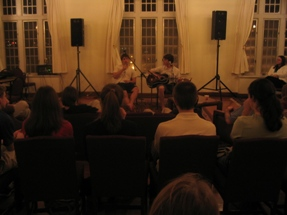
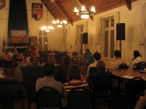

[Insert Tired Cliché Here]
|
|
| vt experience home about features back to peterpages.net | |
What do you get when you cross a bunch of smart high school with a bunch of crazy Hillcrest residents? We don't know either. Maybe you can tell us in this month's installment of the Virginia Tech Experience... the last full-length one of this academic year. |
Jump to a Section:
Coffeehouse | Smart Road,
Etc.
Section 1:
|
| Brad, our ever popular MC again took up the hosting reins for the year's third coffeehouse. And a very casually dressed Greg helped to scare the freshmen off a little bit. |  |
|
| Holy crap, look at all of those new
faces.
Here, one of the prospective students reads an original
composition entitled "1000." Here's how it went: "One... two... three... [seriously] four... [excited] five..." etc. |
||
| But this guy wrote an actual poem. And in the background, you can see that the Hillcrest Jukebox was able to make an appearance. | ||
| And what coffeehouse would be
complete without Brad on the guitar? |
||
| How about with backup from Greg? |  | |
 |
And now a story from my suitemate Geoff, who is reportedly spearheading an effort to create some sort of Hillcrest Fourm/Wiki/Other Web Community sort of thing. | |
| Behold the jukebox in all its glory! | ||
| And here's Chris, a fellow freshman engineering major, who is quite talented with the guitar. Here, he plays it behind his back. | ||
| Ladies and gentlemen, for your
listening pleasure: Collin! He'll make you laugh, he'll make you cry (with his stories and by criticising your feet, respectively). Here, the Associated Press reports on the then-recent Paris riots, containing such great lines as "Just to be safe, the French government immediately surrendered" and "we're having to train these new recruits [the rioters were drafted into the French army] in such crucial skills as flag waving and rifle stacking." Stereotypical, but still funny. |
||
| Electrical Engineer/Music Major/First Chair Cellist David plays us a tune conventionally... | ||
| ...and then by plucking it out. Cool beans. | ||
| Well, the front row's pretty cleared out, but we're still trucking. Brad and Pete played a song for us, in a sampling of potential future collaborations. We'll see what happens. | ||
| Yay, good singing! | ||
| You may not know this: but in addition to being a good satirical writer, Collin is also a forestry major. That's correct: He's a Lumberjack, and He's OK. | ||
| Brad strumming his guitar instead of helping everybody clean up. | ||
| Brad... and Talking Heads frontman
David Byrne. Spooky... they both have that same crazy look in their eyes. |
||
| The various string players closed out the night with a good jam session... and then most of us played Apples to Apples until we ran out of cards. Which took a really long time. | ||
{kind=link}
{kind=link}
{kind=link}
{kind=link}
{kind=link}
{kind=link}
{kind=link}
{kind=link}
{kind=link}
{kind=link}
{kind=link}
{kind=link}
{kind=link}
{kind=link}
{kind=link}
{kind=link}
Jump to a Section:
Coffeehouse | Smart Road, Etc.
|
|
|